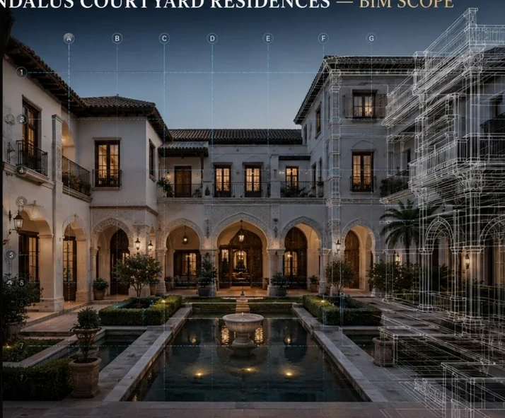

ARCH / STR / MEP
Coordinate
Structured Revit models developed around coordinated geometry and readable information.
Linked proofAl Noor • Souq Galleria • Desert Pearl
BADR uses coordinated models to make interfaces, quantities, sequence and information visible before they become expensive construction problems.


Coordination, information maturity, issue control, quantities, time, cost and handover become visible inside one controlled information environment.
Structured Revit models developed around coordinated geometry and readable information.
A controlled path from concept to construction and asset-ready information.
Federated review, clash testing and issue follow-up.
Model-based schedules and quantities that improve cost transparency.
Sequencing, logistics, phasing and cost-linked model intelligence.
Structured information for testing, handover and operations.
This section mirrors every named project case in the supplied BIM portfolio.
Architecture, structure and MEP brought into one coordinated decision environment.

Architecture, Structure and MEP at LOD 300 with coordination and quantity extraction.
Parametric dome geometry, structure, MEP routes and lighting integration.

Architecture, Structure and MEP with retail-unit planning, clash detection and handover data.
Federation, constructability, quantities, 4D planning and handover as one delivery strategy.

Design-to-BIM development with quantity visibility, coordination and 4D readiness.
Multi-discipline federation, constructability review and IFC / COBie / BOQ outputs.

LOD 300–400 linked to sequencing, logistics, phasing and time-space simulation.
Architecture • Structure • Mechanical • Electrical • Plumbing / Fire • Landscape. The risk sits in the interfaces between them.